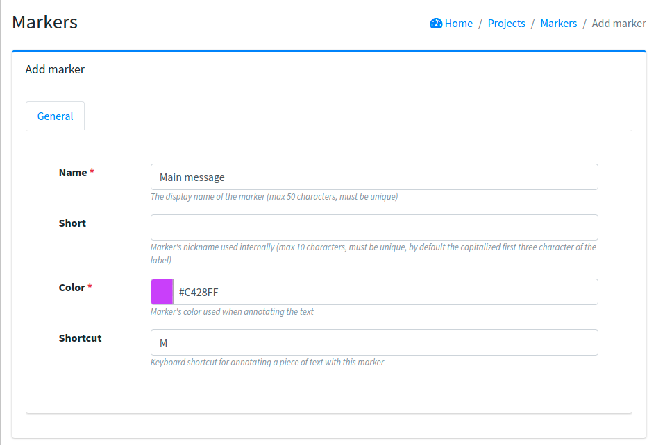
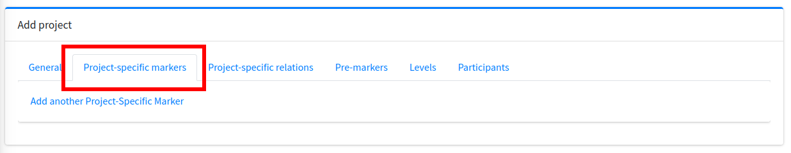
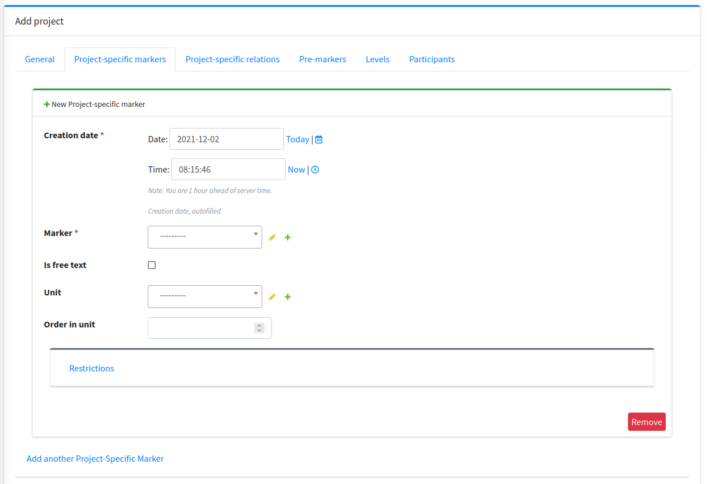

Creating a custom annotation task¶
Defining markers¶
If you want to annotate a task currently unsupported by Textinator or simply customize an already existing task, you will have to define custom units of annotation. Textinator supports such customized definitions through Markers. You need just a couple of things to define a basic Marker:
find a descriptive name that will be displayed for the annotators;
choose a color;
choose a shortcut for the marker (optional);
choose a short nickname for the marker (even more optional).
Let’s say we want the annotators to find and mark the main message of the text, then filled-in Marker fields (corresponding to the properties listed above), would look like in the picture below.
{kind=link}
Recall that Marker provides only annotation definition. For each particular project, we should create a separate variant. In order to do that you either have to create a new project (see HERE) or use an already existing one. Open a project of your choice in an admin interface and choose the tab called “Project-specific markers” (should look like in the picture below, if you have just created a new project).
{kind=link}
Click on “Add another Project-Specific Marker”.
{kind=link}
Choose a Marker that you have defined before and define variant-specific properties:
If you want your annotators to be able to input text freely for the concept, select the checkbox “Is free text”. If you require annotators to mark spans in the text, then do NOT select that checkbox (if you want them to mostly mark spans in the text and sometimes input text freely, e.g., enter paraphrases of the marked span, see [HERE]).
If you want your marker to be a part of the unit, i.e. group of markers. For instance, when creating multiple choice questions, consisting of a question, a correct answer and 3 distractors, then all of them would be considered a unit. In which case you will need to create a unit first (by clicking on the green “+” button near the unit) and then choose one and same unit for all 3 markers (question, correct answer and distractor).
If a marker belongs to a unit, then you need to define the display order for each marker in a unit. For instance, if you want question, correct answer and distractors to be shown in this order, you would need to select “Order in unit” to be 1, 2 and 3, respectively.
In our example case, we want annotators to be able to enter main message as a free text and this is the only marker connected to it, so no units are required. Hence, the filled in form would look as below.